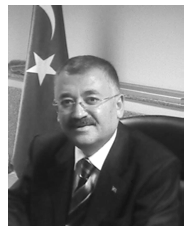

TAKDİM
“Soğuk Savaş”ın bitimi ile yeniden şekillenen Ortadoğu’da önemli tarihsel gelişmeler yaşanmaktadır. Hem bölge ülkelerini, hem de bölge dışı aktörleri doğrudan ilgilendiren bu yeni süreç Türkiye’yi de derinden etkilemektedir.
Günümüzün küresel ve “oyun kurucu” aktörü ABD’nin “Genişletilmiş Ortadoğu Projesi” olarak ifade edilen bölge ile ilgili perspektifi çerçevesinde ülkeler yeniden yapılanmaktadır. İktidarlar değişmekte, yeni düzene uyum sağlayanlar koltuklarını korurken; uyum sağlayamayanlar tasfiye edilmektedir. Görünen veya insanların görmeleri istenen “gerçek”; diktatörlüklerin yıkılıp, demokrasiye ve insan haklarına duyarlı yönetimlerin işbaşına gelmeleridir. Geri planda olan ise bölgenin kaynakları özellikle petrolün üretim, dağıtım ve geçiş güzergâhlarının yeni bir paylaşıma ve kontrole tabi tutulmasıdır.
Irak’ta yaşadığımız, sıcak müdahalenin küresel güce olan maliyetinin yüksekliği ve sürdürülemezliği yeni stratejilerin geliştirilmesine neden olmuş; ülke kamuoylarının birtakım evrensel ihtiyaç ve beklentileri, duyarlılıkları harekete geçirilerek yönetimlerin devrilmesi süreci başlatılmıştır. Mısır ve Libya’da yaşanan ve adına “Arap Baharı” denilen bu süreç son dönemde Suriye’yi etkisine almıştır. Şüphesiz, Suriye’deki gelişmeler tarihsel ve komşuluk ilişkileri bakımından Türkiye’yi yakından ilgilendirmekte ve aktif bir rol almaya zorlamaktadır.
Önemli tarihi, stratejik ve edebi araştırmalarıyla yakından tanıdığımız Dr. Ahmet Kıymaz bu eseri ile Suriye konusunu masaya yatırmaktadır. Suriye’nin dünü, bugünü ve muhtemel yarınını ayrıntılı bir şekilde inceleyen Sayın Kıymaz’ın bu eseri önemli bir boşluğu dolduracaktır. En önemli silahın “bilgi” olduğu düşünülürse, belgeye dayalı bu çalışmanın ülkemizdeki karar vericilere ve aydınlarımıza büyük katkılar sağlayacağı açıktır.
Bu vesile ile Dr. Ahmet Kıymaz’ı kutluyor ve çalışmalarının devamını diliyoruz.
Yrd. Doç. Dr. Ali GÜLER
20 Haziran 2012
DR. AHMET KIYMAZ

1963 yılında, Çankırı - Merkez’de doğdu.
1985’te G.Ü. Gazi Eğitim Fakültesi Türk Dili ve Edebiyatı Bölümü’nden mezun oldu. “Halk Bilimi ve Halk Edebiyatı Yönüyle Yâren Kültürü” konulu lisans tez çalışmasını yaptı. Mezuniyetine müteakip Türk Silâhlı Kuvvetlerinde “Teğmen” rütbesine nasbedildi ve aynı yıl Silâhlı Kuvvetler Mızıka Astsubay Hazırlama Okuluna Türk Dili ve Edebiyatı öğretmeni olarak atandı.
1991 yılında G.Ü. Sosyal Bilimler Enstitüsünde “1918-1928 Yılları Arasında Yayımlanan Türk Romanlarında Millî Mücadele” konulu çalışmasıyla “Yüksek Lisans” öğrenimi yaptı.
1992 yılında Kara Harp Okulu Türk Dili ve Kompozisyon öğretim üyeliğine atandı.
2001 yılında, G.Ü. Sosyal Bilimler Enstitüsünde “Türk Romanlarında Savaş ve Askerlik” konulu çalışmasıyla Edebiyat Doktoru unvanını almaya hak kazandı.
Eylül 2003’te yurt dışı ataması ile 6 ay Ürdün Kraliyet Lisan Okulu’nda görev yaptı.
Lise düzeyinde 11 yıl, üniversite düzeyinde 12 yıl Türk Dili ve Edebiyatı / Kompozisyon dersleri veren Sayın Dr. KIYMAZ, öğretmenlik görevine ek olarak; dost ve kardeş ülkelerin subay ve askerî öğrencilerine Türkiye Türkçesi dersleri verdi.
Türk Ocakları, İLESAM, TRAC, TÜRK EMEKLİ SEN, Birleşik Emekliler Derneği gibi sivil toplum kuruluşları üyesi olan Sayın KIYMAZ, çeşitli televizyon kanallarında canlı yayınlara katıldı. Bu tür faaliyetlere, hâlen devam etmektedir.
Bilge, Eğitim, Erguvan, Yâren Meclisi, Duygu, Flas, Karatekin ve KHO Bilim Dergisi gibi ulusal ve yöresel sanat, eğitim, bilim ve edebiyat dergilerinde ve çeşitli gazetelerde makale, deneme ve tanıtım yazıları yazdı. Yeni Ufuk gazetesinde “Fikir Vâdisi” köşesindeki yazılarına hâlen devam etmektedir.
Eylül 2004’te Türk Silâhlı Kuvvetleri’nden “Yarbay” rütbesinde kendi isteği ile emekliye ayrılan Sayın Dr. Ahmet KIYMAZ, 29 Mart 2009 Yerel Seçimleri’nde Keçiören bölgesi kanaat önderleri tarafından meclis üyeliğine aday gösterilerek Keçiören ve Büyükşehir Belediye Meclis Üyesi seçildi.
Yayımlanmış kitapları şunlardır:
“Romanda Millî Mücadele”, Akçağ Yayınları, Ankara, 1991
“Çankırı Yöresi Yâren Kültürü”, Yaprak Yayınları, Ankara, 1995
“Kompozisyon Bilgileri”, KHO Basım Evi, Ankara, 1999
“Savaş ve Askerlik”, Sarkaç Yayınları, Ankara, 2012
Sayın KIYMAZ, evli ve iki çocuk babası olup İngilizce bilmektedir.